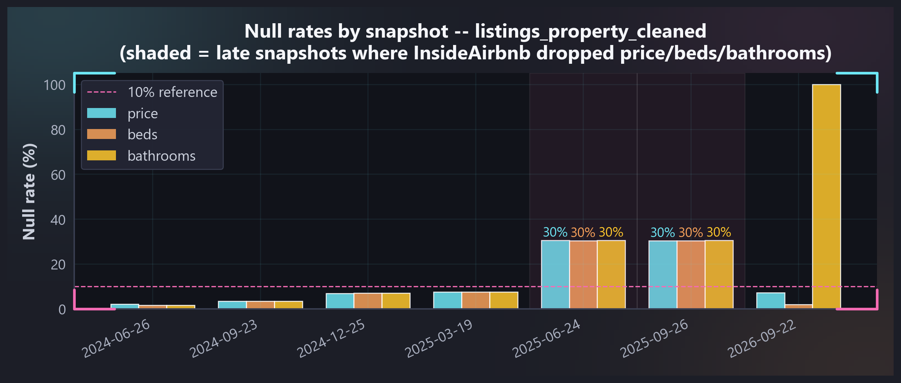
Pricing Consistency and Data Quality Analysis
Python
SQL
Data Quality
A decision memo in notebook form: impute price, beds and bathrooms across snapshots, or drop pricing given 33 percent missingness? Coefficient-of-variation stability tests, IQR and temporal outlier detection, and a written quality-flag table.
Question: Should we impute price, beds, and bathrooms for the final two snapshots (2025-06-24, 2025-09-26) using values from the same listing_id + host_id in the first four snapshots, or drop pricing altogether given ~33 % missing data?
Plan
- Confirm null rates by snapshot for all three columns
- Size the imputable universe (listings in snaps 5 to 6 with history in snaps 1 to 4)
- Test
beds/bathroomsstability, are they constant across snaps 1 to 4? - Measure
priceconsistency via coefficient of variation (CV) - Summarise the decision
- Write imputation table to DB
- ADR outlier detection (IQR cross-sectional + temporal spikes)
- Occupancy anomalies (saturated / zero flags)
- Data gap analysis (calendar coverage, missing prices, listing churn)
- Combined quality flags into
airbnb_features.listing_quality_flags - Impact analysis: all listings vs. clean (unflagged) subset
1 Null-rate confirmation by snapshot
2 Imputable universe, listings in snaps 5 to 6 with price history in snaps 1 to 4
| total_late_listings | have_price_history | in_early_no_price | new_in_late_only | pct_imputable | |
|---|---|---|---|---|---|
| 0 | 18732 | 15401 | 119 | 3212 | 82.2 |
| snapshot_date | listings | imputable | pct_imputable | |
|---|---|---|---|---|
| 0 | 2025-06-24 | 17150 | 15214 | 88.7 |
| 1 | 2025-09-26 | 16822 | 13950 | 82.9 |
3 beds and bathrooms stability across snaps 1 to 4
| n_snaps | listings | beds_constant | pct_beds_constant | baths_constant | pct_baths_constant | |
|---|---|---|---|---|---|---|
| 0 | 2 | 1694 | 1564 | 92.3 | 1651 | 97.5 |
| 1 | 3 | 1497 | 1366 | 91.2 | 1443 | 96.4 |
| 2 | 4 | 11012 | 10015 | 90.9 | 10847 | 98.5 |
4 Price consistency (CV) across snaps 1 to 4
Uses calendar price (daily rate from calendar_cleaned), aggregated to a per-snapshot ADR for each listing, then CV measured across those 4 snapshot ADRs. Restricted to listings also present in snaps 5 to 6 (the imputable universe).
CV = stddev(snapshot_ADR) / mean(snapshot_ADR).
| n_obs | listings | avg_cv | p25_cv | median_cv | p75_cv | p90_cv | cv_zero | cv_le_5pct | cv_5_to_15pct | cv_15_to_30pct | cv_gt_30pct | |
|---|---|---|---|---|---|---|---|---|---|---|---|---|
| 0 | 2 | 1697 | 0.0363 | 0.0 | 0.0 | 0.0 | 0.1059 | 1348 | 75 | 132 | 82 | 60 |
| 1 | 3 | 1497 | 0.0483 | 0.0 | 0.0 | 0.0 | 0.1467 | 1126 | 88 | 136 | 93 | 54 |
| 2 | 4 | 11009 | 0.0383 | 0.0 | 0.0 | 0.0 | 0.1350 | 8386 | 503 | 1119 | 714 | 287 |
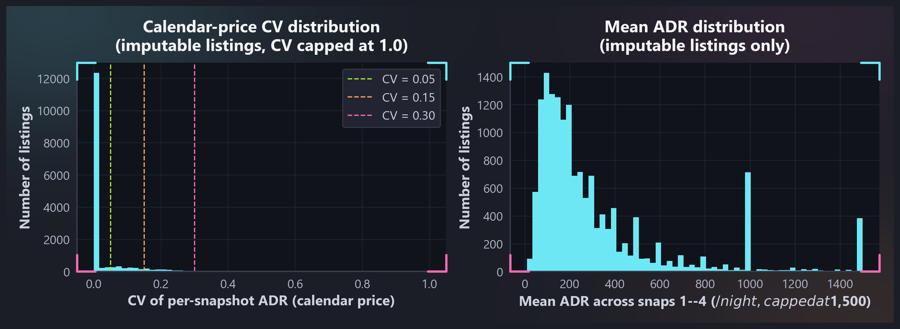
Single-obs listings (cv=0 by definition): 1,314
Multi-obs listings: 14,202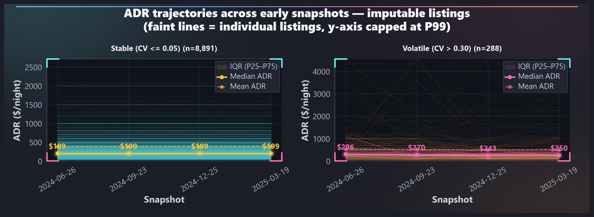
Stable (CV <= 0.05): 8,891 listings
Volatile (CV > 0.30): 288 listings
Clipped above P99: 366 data points5 Decision summary
=== Calendar-price CV summary (imputable listings with >= 2 observations) ===
n_with_2plus_obs median_cv pct_cv_le_5 pct_cv_le_15 pct_cv_gt_30
14203 0.0 81.2 90.9 2.8
Decision thresholds:
beds / bathrooms : impute if pct_beds_constant > 95% AND pct_baths_constant > 95%
price (ADR) : impute if median_cv < 0.10 AND pct_cv_gt_30 < 15%
otherwise treat as high-risk -- consider dropping or
using mean ADR as a flagged lower-quality feature.6 Write imputation table to DB
Creates airbnb_features.listing_snapshot_imputed, one row per (snapshot_date, listing_id) across all 6 snapshots.
adr: actual from
overall_listing_metrics.adr_365(snaps 1-4) or carried forward from the most recent non-null snapshot (snaps 5-6).beds / bathrooms: same carry-forward logic from
listings_property_cleaned.price_imputed: TRUE only for rows in snaps 5-6 where no actual ADR exists.
source_snapshot: the snapshot whose value was carried forward (NULL for actual rows).
airbnb_features.listing_snapshot_imputed written successfully.| snapshot_date | rows | imputed_rows | pct_adr_filled | pct_beds_filled | pct_baths_filled | |
|---|---|---|---|---|---|---|
| 0 | 2024-06-26 | 16683 | 0 | 97.6 | 99.5 | 98.9 |
| 1 | 2024-09-23 | 16950 | 0 | 98.0 | 99.6 | 98.2 |
| 2 | 2024-12-25 | 17167 | 0 | 98.4 | 99.6 | 95.9 |
| 3 | 2025-03-19 | 17238 | 0 | 98.2 | 99.6 | 95.6 |
| 4 | 2025-06-24 | 17150 | 17150 | 87.9 | 98.7 | 80.5 |
| 5 | 2025-09-26 | 16822 | 16822 | 82.1 | 99.0 | 79.4 |
| 6 | 2026-09-22 | 17630 | 0 | 56.7 | 99.3 | 1.2 |
7 ADR outlier detection
Flag listings whose ADR is statistically extreme within each snapshot using two complementary methods:
7a Cross-sectional (IQR): ADR below Q1 − 1.5×IQR or above Q3 + 1.5×IQR within the same snapshot.
7b Temporal spikes: For listings present in consecutive snapshots, |% change| in
adr_90exceeding 50 % snapshot-over-snapshot.
=== ADR outliers (IQR method, adr_90) ===
total outlier_low outlier_high pct_outlier
snapshot_date
2024-06-26 14423 0 1466 10.2
2024-09-23 14509 0 1551 10.7
2024-12-25 15973 0 1761 11.0
2025-03-19 16174 0 1747 10.8
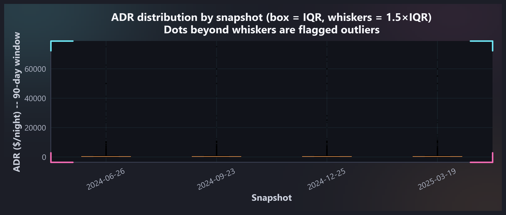
=== Temporal ADR spikes (|% change| > 50%) ===
pairs spikes pct_spike
snapshot_date
2024-09-23 12050 182 1.5
2024-12-25 13209 245 1.9
2025-03-19 14452 258 1.8
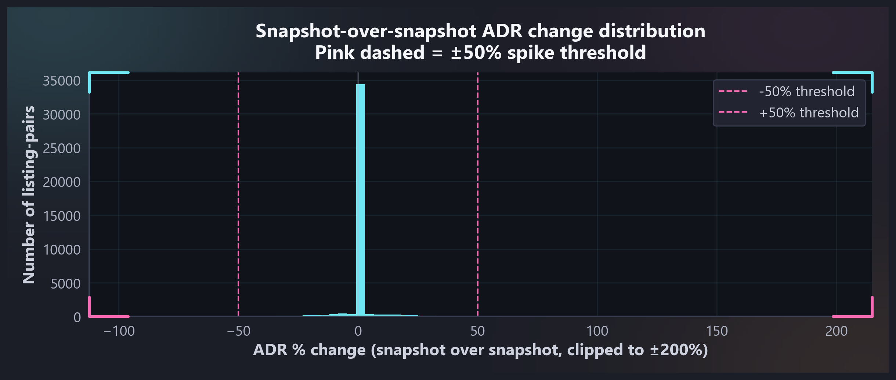
Total listing-pairs: 39,711
Spikes (|change| > 50%): 685 (1.7%)8 Occupancy anomalies
Two extremes worth flagging:
Saturated (occ_90 >= 0.95): Near-100 % occupancy likely reflects a host-blocked calendar rather than genuine bookings.
Zero (occ_90 == 0 with data present): Listing has calendar data but zero booked days, inactive or withdrawn from market.
=== Occupancy anomalies (90-day window) ===
total saturated zero normal pct_saturated pct_zero
snapshot_date
2024-06-26 16683 1126 2260 13297 6.7 13.5
2024-09-23 16950 1354 2441 13155 8.0 14.4
2024-12-25 17166 2022 1193 13951 11.8 6.9
2025-03-19 17237 1455 1063 14719 8.4 6.2
2025-06-24 17150 1591 2388 13171 9.3 13.9
2025-09-26 16822 1631 2587 12604 9.7 15.4
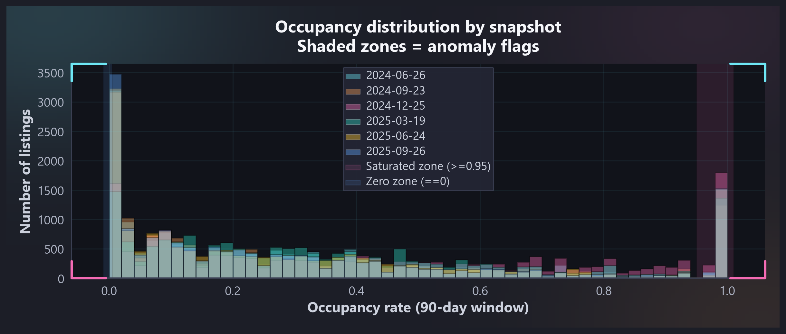
8b Refining occupancy flags: hotels and new listings
Not all extremes are anomalies:
Saturated (occ >= 0.95) could be hotels or professional hospitality properties that legitimately run near capacity.
Zero occupancy could be brand-new listings that haven’t launched yet (no first review = never booked).
Cross-reference with property_type, room_type, and first_review_date from listings_property_cleaned to separate legitimate cases from true anomalies, then update the flag definitions.
=== Saturated occupancy (>= 0.95) breakdown ===
total_saturated hotel_like non_hotel pct_hotel
snapshot_date
2024-06-26 1126 48 1078 4.3
2024-09-23 1354 64 1290 4.7
2024-12-25 2022 121 1901 6.0
2025-03-19 1455 94 1361 6.5
2025-06-24 1591 119 1472 7.5
2025-09-26 1631 137 1494 8.4
Top property_types among saturated-occupancy listings:
entire rental unit 2,660
entire home 2,371
entire condo 1,239
private room in home 771
room in hotel 291 ← hotel-like
entire serviced apartment 281
entire villa 201
entire guesthouse 151
private room in rental unit 138
private room in resort 131 ← hotel-like
entire guest suite 121
entire townhouse 119
private room in townhouse 70
room in boutique hotel 63 ← hotel-like
entire vacation home 62
=== Zero occupancy breakdown ===
total_zero new_listing established pct_new
snapshot_date
2024-06-26 2260 729 1531 32.3
2024-09-23 2441 938 1503 38.4
2024-12-25 1193 525 668 44.0
2025-03-19 1063 460 603 43.3
2025-06-24 2388 728 1660 30.5
2025-09-26 2587 803 1784 31.0
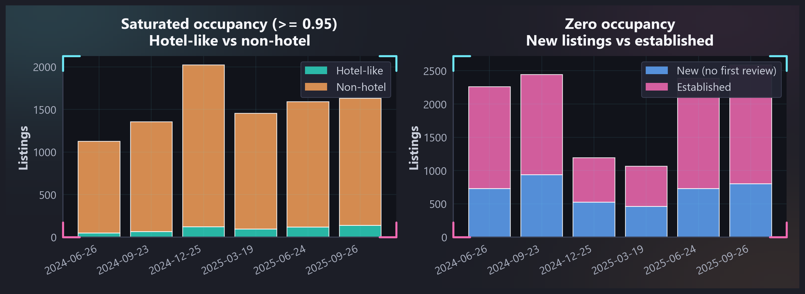
Refined flag definitions:
flag_occ_saturated: occ_90 >= 0.95 AND NOT hotel-like property
flag_occ_zero: occ_90 == 0 AND has first_review (not brand-new)9 Data gap analysis
Three dimensions of data completeness:
9a Calendar coverage: Ratio of actual calendar rows to 365 expected days. Listings below 80 % coverage are flagged, metrics built on sparse data are unreliable.
9b Missing price on booked days: Booked (
available = 0) butprice IS NULL. ADR / RevPAR are understated when booked-day prices are missing.9c Listing churn: Listings that appear or disappear across snapshots. Churn complicates longitudinal analysis and imputation.
=== Calendar coverage (rows / 365 expected) ===
listings median_coverage low_cov_count pct_low_cov
snapshot_date
2024-06-26 16683 1.0 0 0.0
2024-09-23 16950 1.0 0 0.0
2024-12-25 17166 1.0 0 0.0
2025-03-19 17237 1.0 0 0.0
2025-06-24 17150 1.0 0 0.0
2025-09-26 16822 1.0 0 0.0
2026-09-22 17630 1.0 0 0.0
=== Missing price on booked days (>20% threshold) ===
listings_with_bookings median_pct_missing flagged pct_flagged
snapshot_date
2024-06-26 15904 0.0 0 0.0
2024-09-23 16166 0.0 0 0.0
2024-12-25 16648 0.0 0 0.0
2025-03-19 16653 0.0 0 0.0
2025-06-24 16039 100.0 16039 100.0
2025-09-26 15696 100.0 15696 100.0
2026-09-22 16512 100.0 16512 100.0
=== Listing presence across 7 snapshots ===
Present in 1/7 snapshots: 10,177 listings
Present in 2/7 snapshots: 3,628 listings
Present in 3/7 snapshots: 2,667 listings
Present in 4/7 snapshots: 2,397 listings
Present in 5/7 snapshots: 2,163 listings
Present in 6/7 snapshots: 3,631 listings
Present in 7/7 snapshots: 7,431 listings
Churned (missing from >= 1 snapshot): 24,663 / 32,094 (76.8%)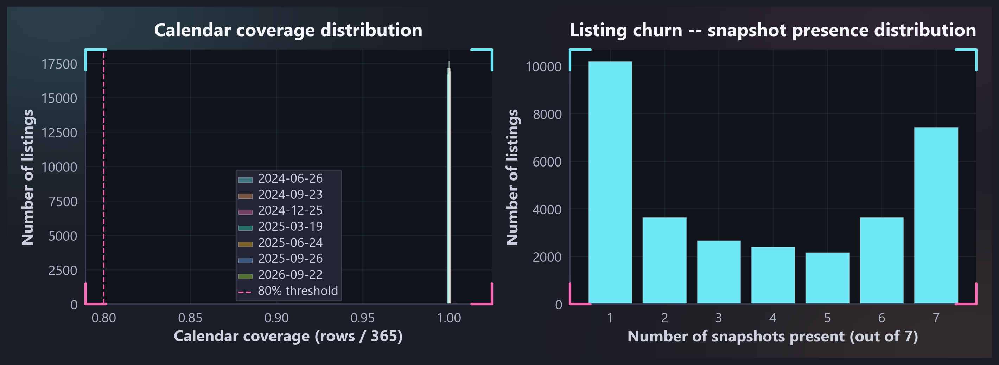
10 Combined quality flags into airbnb_features.listing_quality_flags
Materialise a single boolean-flag table combining all anomaly detections above. One row per (snapshot_date, listing_id). Downstream consumers can filter or weight listings by flag status.
| Flag | Source | Threshold |
|---|---|---|
flag_adr_outlier |
§7a IQR | ADR outside Q1−1.5×IQR … Q3+1.5×IQR |
flag_adr_spike |
§7b temporal | |Δ ADR %| > 50 % vs. previous snapshot |
flag_occ_saturated |
§8 + §8b | occ_90 >= 0.95 AND NOT hotel-like property |
flag_occ_zero |
§8 + §8b | occ_90 == 0 with data present AND has first_review (not brand-new) |
flag_low_coverage |
§9a | calendar rows / 365 < 0.80 |
airbnb_features.listing_quality_flags written successfully (refined flags).
snapshot_date listings adr_outlier adr_spike occ_saturated occ_zero low_coverage any_flag
2024-06-26 16683 1466 0 1078 1531 0 4011
2024-09-23 16950 1551 182 1290 1503 0 4412
2024-12-25 17166 1761 245 1901 668 0 4383
2025-03-19 17237 1747 258 1361 603 0 3844
2025-06-24 17150 0 0 1472 1660 0 3132
2025-09-26 16822 0 0 1494 1784 0 3278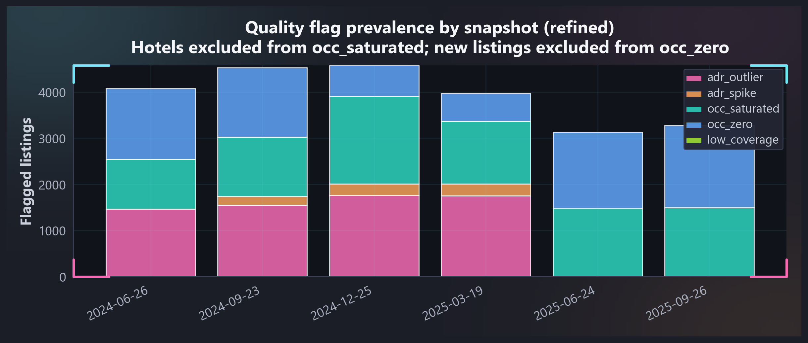
11 Impact analysis: all listings vs. clean (unflagged) subset
Join metrics with listing_quality_flags and compare key distributional statistics, ADR, occupancy, RevPAR, across cohorts. Restricted to the 4 early snapshots (2024-06-26 … 2025-03-19) where ADR is actual, not carry-forward.
| Cohort | Definition |
|---|---|
| All | Every listing-snapshot with actual ADR |
| Clean | Rows where no quality flag is TRUE |
| Flagged | Rows with at least one flag |
If the flags are catching real noise, we expect the clean subset to have tighter distributions (lower std, narrower IQR) and potentially different central tendency (lower mean ADR if luxury outliers removed; higher mean occupancy if zero-occ listings removed).
=== Distributional comparison: All vs Clean vs Flagged ===
snapshot_date cohort n mean_adr median_adr std_adr p25_adr p75_adr mean_occ median_occ mean_revpar median_revpar
2024-06-26 all 14423.0 383.03 199.0 1498.12 120.0 351.0 0.332 0.26 126.58 52.27
2024-06-26 clean 11943.0 220.41 184.0 140.08 112.0 299.0 0.279 0.23 63.38 39.00
2024-06-26 flagged 2480.0 1166.15 799.0 3495.93 198.0 1000.0 0.588 0.56 430.96 201.58
2024-09-23 all 14509.0 400.09 199.0 1803.32 119.0 350.0 0.342 0.24 122.44 51.11
2024-09-23 clean 11600.0 217.06 180.0 137.55 110.0 295.0 0.280 0.21 60.23 37.80
2024-09-23 flagged 2909.0 1129.95 725.0 3934.71 165.0 1000.0 0.591 0.56 370.51 180.00
2024-12-25 all 15973.0 417.81 199.0 1914.32 119.0 350.0 0.464 0.42 170.02 83.11
2024-12-25 clean 12258.0 218.09 183.0 138.35 110.0 295.0 0.402 0.38 88.69 61.67
2024-12-25 flagged 3715.0 1076.79 500.0 3889.79 150.0 1000.0 0.667 0.96 438.35 205.00
2025-03-19 all 16174.0 408.06 199.0 1650.24 120.0 360.0 0.383 0.31 151.17 65.25
2025-03-19 clean 12933.0 220.77 180.0 143.85 111.0 295.0 0.328 0.29 74.11 49.33
2025-03-19 flagged 3241.0 1155.44 799.0 3579.44 189.0 1000.0 0.598 0.56 458.67 219.94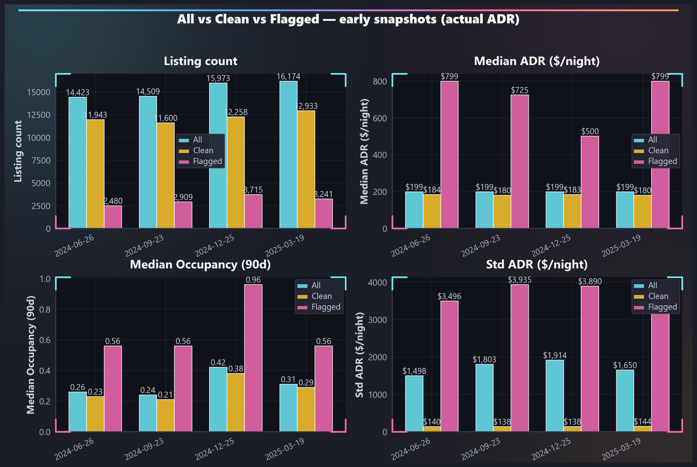
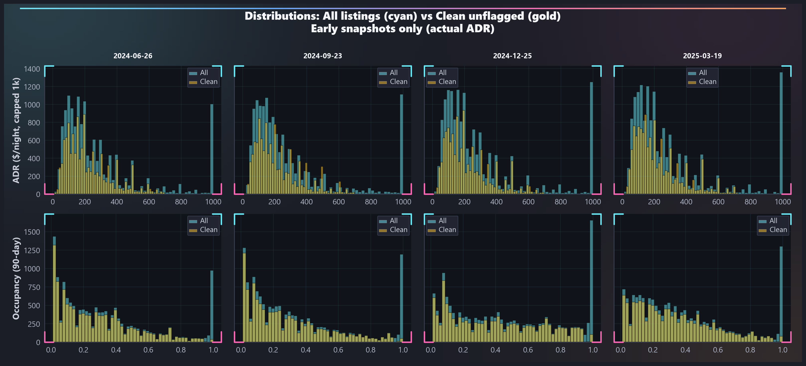
=== % change: Clean vs All (positive = clean is higher) ===
snapshot_date mean_adr_pct_chg median_adr_pct_chg std_adr_pct_chg mean_occ_pct_chg median_occ_pct_chg mean_revpar_pct_chg median_revpar_pct_chg
2024-06-26 -42.46 -7.54 -90.65 -15.96 -11.54 -49.93 -25.39
2024-09-23 -45.75 -9.55 -92.37 -18.13 -12.50 -50.81 -26.04
2024-12-25 -47.80 -8.04 -92.77 -13.36 -9.52 -47.84 -25.80
2025-03-19 -45.90 -9.55 -91.28 -14.36 -6.45 -50.98 -24.40
Interpretation:
Positive mean_adr_pct_chg → flagged listings had lower ADR (dragging mean down)
Negative mean_adr_pct_chg → flagged listings had higher ADR (luxury outliers)
Negative std_adr_pct_chg → clean subset is tighter (flags removed noise)
Positive mean_occ_pct_chg → flagged listings had lower occupancy (zero-occ removed)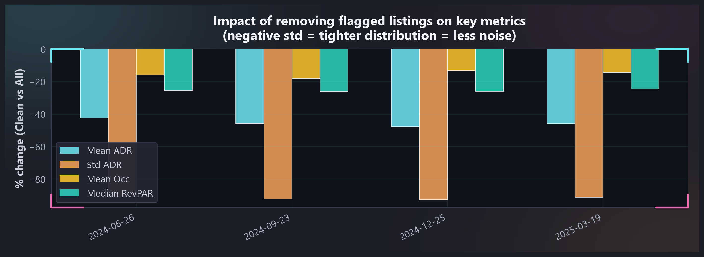
11b Flag-by-flag isolation
The all-or-nothing view above removes ~30 % of listings at once. Which individual flag is doing the heavy lifting? For each flag we exclude only listings carrying that single flag and measure the % shift in mean ADR, std ADR, mean occupancy, and median RevPAR vs. the full set.
This tells us whether the −40 % mean-ADR swing is driven primarily by adr_outlier (luxury tail), occ_zero (inactive listings with weird ADR), or some combination.
=== Flag-by-flag impact (early snapshots, each flag excluded independently) ===
snapshot excluded_flag n_excluded pct_excluded mean_adr_pct_chg std_adr_pct_chg mean_occ_pct_chg median_revpar_pct_chg
2024-06-26 ADR outlier 1466 10.2 -42.84 -90.62 0.88 -13.99
2024-06-26 ADR spike 0 0.0 0.00 0.00 0.00 0.00
2024-06-26 Occ saturated 1078 7.5 0.98 0.87 -16.14 -12.21
2024-06-26 Occ zero 0 0.0 0.00 0.00 0.00 0.00
2024-06-26 Low coverage 0 0.0 0.00 0.00 0.00 0.00
2024-09-23 ADR outlier 1551 10.7 -46.25 -92.36 1.53 -14.77
2024-09-23 ADR spike 182 1.3 -2.10 -4.35 -0.09 -0.22
2024-09-23 Occ saturated 1290 8.9 1.45 0.05 -18.65 -13.27
2024-09-23 Occ zero 0 0.0 0.00 0.00 0.00 0.00
2024-09-23 Low coverage 0 0.0 0.00 0.00 0.00 0.00
2024-12-25 ADR outlier 1761 11.0 -48.27 -92.78 2.48 -12.49
2024-12-25 ADR spike 245 1.5 -0.76 -0.08 0.10 -0.02
2024-12-25 Occ saturated 1901 11.9 3.02 1.62 -15.44 -13.24
2024-12-25 Occ zero 0 0.0 0.00 0.00 0.00 0.00
2024-12-25 Low coverage 0 0.0 0.00 0.00 0.00 0.00
2025-03-19 ADR outlier 1747 10.8 -45.96 -91.22 1.57 -13.99
2025-03-19 ADR spike 258 1.6 -0.55 0.41 -0.15 -0.38
2025-03-19 Occ saturated 1361 8.4 1.38 -2.07 -14.75 -11.31
2025-03-19 Occ zero 0 0.0 0.00 0.00 0.00 0.00
2025-03-19 Low coverage 0 0.0 0.00 0.00 0.00 0.00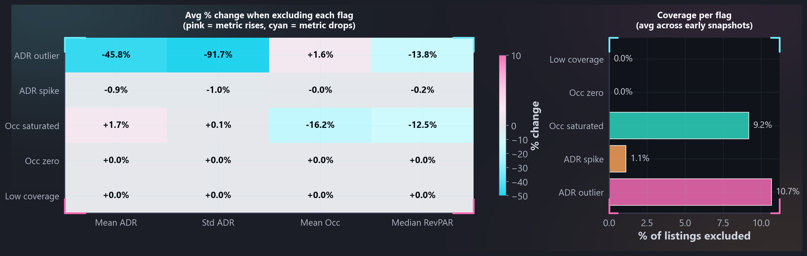
Biggest driver of mean ADR shift: ADR outlier (-45.8%)
Biggest driver of std ADR shift: ADR outlier (-91.7%)
Biggest driver of mean occ shift: Occ saturated (-16.2%)